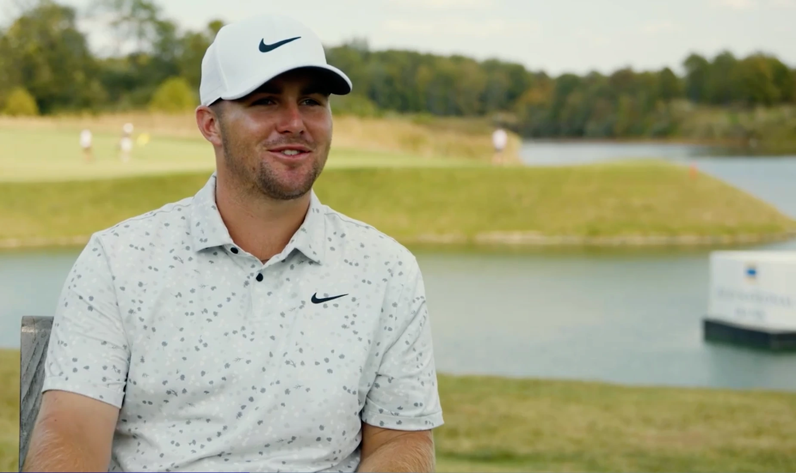

Quick Summary: The 2026 Genesis Scottish Open (July 9-12 at The Renaissance Club) draws a ferocious co-sanctioned field just one week before the final major at Royal Birkdale. Highlighting the return of LIV Golf's Jon Rahm in his first regular PGA Tour start since late 2023, defending champion Chris Gotterup entering with red-hot momentum, and a razor-thin margin separating betting favorite Scottie Scheffler and course specialist Rory McIlroy, North Berwick is set for a premier links showdown.

The Tactical Challenge of The Renaissance Club
The Renaissance Club in North Berwick represents a modern hybrid links challenge. Architect Tom Doak designed generous landing areas off the tee, but the course places a premium on controlled, long-iron play into massive, undulating greens. When the coastal wind begins to bite off the Firth of Forth, player execution becomes the ultimate metric. It is not as savage as a traditional Open layout, but it acts as the perfect final preparation before Royal Birkdale next week.
Analyzing recent leaderboards reveals a clear blueprint for success. Winners here must possess a combination of explosive driving distance, flat-trajectory control in crosswinds, and elite scrambling skills. The last three champions all crossed the 15-under mark, indicating that while scoreable conditions exist, only power players with a sharp short game can maintain momentum when the weather turns foul. Here is how the top contenders rank for the 2026 edition.
1. Scottie Scheffler
The undisputed betting favorite across all boards, and for good reason. Scottie Scheffler continues to lead the PGA Tour with nine top-10 finishes in just 14 starts this season. While he remains incredibly hungry for his second victory of 2026—his only win this year being the American Express back in January—he arrives in East Lothian looking to avenge several agonizingly close calls, including a dramatic playoff loss at the Travelers Championship.
Scheffler's track record in Scotland is highly encouraging. He used a T8 finish here last year as the ultimate springboard to capture the 2025 Open Championship. Statistically, Scheffler's tee-to-green metrics remain historically dominant, and on a course where approach play determines the leaderboard, his laser-like iron control makes him the golfer to beat this week.
2. Rory McIlroy
The ultimate Renaissance Club specialist. Rory McIlroy won on his debut at Tom Doak's layout in 2023 and tied for second in 2025 behind Chris Gotterup. His unique ability to flight long irons through heavy coastal wind is unmatched in modern golf. Sitting at around +920 odds, McIlroy represents the single greatest threat to Scheffler, especially since this track fits his eye perfectly.
The primary key for McIlroy will be driving accuracy on the wider fairways, allowing him to attack pins from ideal angles. When his driver is dialed in, McIlroy can generate birdie opportunities at a rate that neutralizes the field. If his putter remains steady on these large greens, expect him to be firmly in contention on Sunday afternoon.
3. Chris Gotterup
Do not sleep on the defending champion. Chris Gotterup dominated the field here in 2025 and arrives in Scotland with unbelievable momentum. He just won the John Deere Classic last week, completing a massive, gutsy comeback from a five-stroke deficit in the final round to claim the trophy.
Defending a title on a true links-style layout is historically brutal, but Gotterup's current form is practically untouchable. His high-velocity ball speed and aggressive approach play match up perfectly with the scoring opportunities at The Renaissance Club. If he can manage the fatigue of travel and the pressure of defending, his raw power makes him a serious threat to repeat.
4. Matt Fitzpatrick
The most prolific winner on the PGA Tour this year. Matt Fitzpatrick is the only player with three PGA Tour victories in 2026, hoisting trophies at the Valspar Championship, the Zurich Classic, and the RBC Heritage, where he defeated Scottie Scheffler in an intense playoff.
Fitzpatrick thrives in breezy, seaside conditions and possesses the elite iron play required to score low in volatile winds. While he may lack the raw driving distance of Scheffler or McIlroy, his elite scrambling metrics and superb short game keep his floor incredibly high on links courses. He is a proven winner who knows how to close out high-stakes tournaments in adverse weather.
5. Jon Rahm
The ultimate wild card of the week. Thanks to the co-sanctioned nature of the event, the LIV Golf star is making his first non-major PGA Tour start since the 2023 Tour Championship. Entering the week at +1150 odds, Rahm brings immense firepower and major pedigree to North Berwick.
Rahm has always excelled in wind and possesses an exceptional track record in the British Isles, including multiple Irish Open victories. If his driver is dialed in and he avoids the thick fescue off the tee, the wind won't matter. He represents a massive threat to the PGA Tour regulars and could easily steal the spotlight before the final major next week.
Honorable Mentions
Local hero Robert MacIntyre won here in 2024 and brings strong major championship form after a stellar runner-up finish at the 2025 U.S. Open at Oakmont. Swedish sensation Ludvig Åberg and former champion Xander Schauffele also remain major threats in this stacked co-sanctioned field, both sporting flat ball flights that are perfectly suited for links golf.
The Raw Read
The defining truth of the Scottish Open is that the coastal wind remains the ultimate equalizer, and tee-time waves can dictate a tournament's outcome as much as raw talent. A sudden storm front on Thursday or Friday can completely derail a favorite's championship aspirations. For this reason, targeting players with established, multi-year track records at The Renaissance Club—such as McIlroy, MacIntyre, and Fitzpatrick—is far more logical than chasing short-term momentum.
If forced to pick a single champion, Rory McIlroy is the choice. His driver remains the field's most lethal weapon, his course history is flawless, and his putter has shown the necessary consistency in 2026. However, golf fans should prepare for a potential MacIntyre repeat or a Scheffler breakthrough, as both players are primed to peak just in time for Royal Birkdale.
Frequently Asked Questions
When and where is the 2026 Genesis Scottish Open?
The tournament is scheduled for July 9-12, 2026, at The Renaissance Club in North Berwick, Scotland. The event is co-sanctioned by the PGA Tour and DP World Tour, offering a $9 million purse.
Who is the betting favorite to win the Scottish Open?
Scottie Scheffler is the betting favorite, followed closely by Rory McIlroy. Jon Rahm and Ludvig Åberg lead the next tier of contenders.
Who is the defending champion at The Renaissance Club?
Chris Gotterup is the defending champion, having won the 2025 Genesis Scottish Open by two strokes to claim his second career PGA Tour victory.
Why does the field feature both PGA Tour and DP World Tour players?
As a co-sanctioned event, the field is split between both tours. This strategic placement makes it a premier warm-up event for elite players competing in the Open Championship the following week.
What type of player thrives at The Renaissance Club?
Success requires excellent driving distance, controlled iron play in high winds, and strong scrambling skills around large greens. Recent champions have all paired power off the tee with sharp short games.
Does the Scottish Open offer qualifying spots for the Open Championship?
Yes. The top three players who make the cut and are not already exempt will earn spots in the field at Royal Birkdale next week.